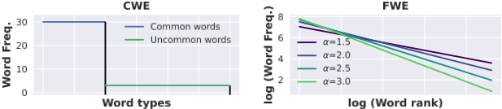
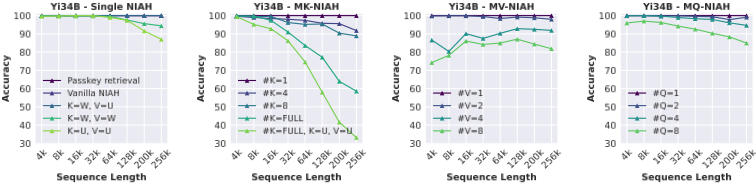
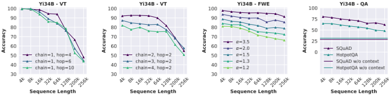
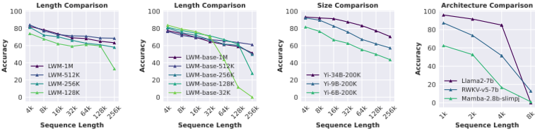
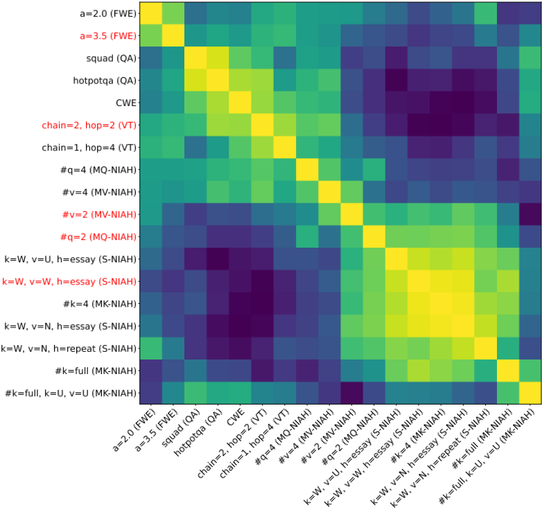

RULER：你的长上下文语言模型的真实上下文规模是多少？
论文指出被广泛采用的 needle-in-a-haystack（NIAH）测试只能反映浅层的长上下文检索能力，无法衡量模型真实可用的上下文长度。作者构建了全合成基准 RULER，包含检索（多种 NIAH 变体）、多跳追踪（variable tracking）、聚合（CWE/FWE 词频统计）和问答四大类共 13 个任务，可灵活配置序列长度（4K–128K）与任务复杂度，并据此评测了 17 个长上下文 LLM。关键结论是：尽管各模型在 vanilla NIAH 上近乎满分，但随着上下文变长几乎所有模型都大幅退化，宣称 32K 以上上下文的模型中只有一半能在 32K 保持合格表现；对 Yi-34B 的深入分析揭示了无法忽略干扰项、答案不完整、照抄上下文、长上下文 QA 幻觉等失败模式。对团队而言，这是评估候选模型'有效上下文长度'、决定上下文预算与 RAG 策略的实用开源工具。
现有长上下文评测（尤其是 NIAH 测试）只考察简单检索，无法反映模型在长输入下检索之外的行为（多跳追踪、聚合、问答），且各工作评测方式不一致，导致模型'宣称的上下文长度'与'实际有效上下文长度'存在巨大差距，缺乏统一、可配置、可自动评分的长上下文评测基准。
构建全合成基准 RULER：四大任务类别——检索（NIAH 变体：更换 needle 类型、多 needle 干扰、多值/多查询召回）、多跳追踪（variable tracking 模拟共指链解析）、聚合（CWE/FWE 词频统计，作为摘要类任务的代理）、问答（将含答案的黄金段落插入同数据集采样的干扰段落中）；任务由输入配置自动生成，可通过目标输出 token 数与上下文信噪比控制复杂度；以 Llama2-7B 在 4K 的表现（85.6%）为阈值定义'有效上下文长度'，并用两种线性加权平均分（wAvg. inc/dec，模拟长短序列的真实使用分布）做细粒度排名；另通过任务相关性聚类从 18 个配置中筛选出 13 个代表性任务。评测使用 vLLM、BFloat16、greedy decoding，每任务每长度 500 个样本。
评测 17 个长上下文 LLM（15 个开源模型 + Gemini-1.5-Pro、GPT-4）：所有模型在 passkey retrieval 和 vanilla NIAH 上近乎满分，但在 RULER 上随序列长度增加大幅退化；宣称 32K+ 上下文的模型中仅约一半在 32K 超过阈值（Llama2-7B@4K = 85.6%）
Gemini-1.5-Pro 以大幅优势排名第一，有效长度超过测试上限 128K
Yi-34B：检索 UUID 类 needle 时退化最严重（>128K 时常无法返回完整 32 位字符）；干扰 needle 增多时性能持续下降，极端版本（#K=FULL）在 256K 下降约 40 分；查询数从 1 增至 8 性能下降约 15 分
Yi-34B 在 128K 的 CWE 任务中超过 80% 的输出是照抄 one-shot 示例的字符串，而短序列下不存在该复制行为
长上下文 QA 中 Yi 的性能趋近其无上下文基线，退化主要来自幻觉和对上下文信息依赖的降低
训练上下文更长不必然带来更好表现（LWM-1M 在 256K 反而差于 512K 版本）；更大模型尺寸与更好的长上下文能力正相关（Yi-34B 显著优于 6B）；非 Transformer 架构（RWKV-v5、Mamba-2.8B）在 8K 即显著退化，大幅落后于 Transformer 基线 Llama2-7B
与 ZeroSCROLLS、L-Eval、LongBench、InfiniteBench 等依赖真实人工标注数据的基准不同，RULER 全部采用合成任务：可灵活控制序列长度与任务复杂度、降低对参数化知识的依赖、支持自动评分；并将评测范围从单一检索扩展到多跳追踪与聚合等检索之外的行为；同时系统提出'有效上下文长度'（以固定阈值判定）与加权平均排名方法，首次大规模量化了宣称长度与有效长度的差距。
相关度级别：high
命中能力域：3.1 上下文工程与记忆 | 3.5 评测与可靠使用
理由：直接命中 3.5（LLM 应用评测基准与方法）与 3.1（长上下文策略、上下文在生产系统中的管理）。团队的知识库问答、代码审查/生成、文档工具都依赖把大量上下文塞进提示，而本文证明模型宣称的上下文长度普遍虚高（宣称 32K+ 的模型仅一半在 32K 达标），且长上下文下会出现忽略不了干扰项、照抄上下文、QA 幻觉等失败模式——这些正是团队在 RAG 与长上下文管线中会直接遇到的可靠性问题。RULER 开源、任务自动生成、基于 recall 自动评分，可直接纳入团队的模型选型与回归评测流程。
建议动作：深入精读并做内部分享
arXiv:2404.06654v3 [cs.CL] 2024年8月6日
Cheng-Ping Hsieh ∗ , Simeng Sun ∗ , Samuel Kriman, Shantanu Acharya Dima Rekesh, Fei Jia, Yang Zhang, Boris Ginsburg
NVIDIA {
chsieh,simengs } @nvidia.com
大海捞针（needle-in-a-haystack，NIAH）测试考察的是从长干扰文本（“干草堆”）中检索出某条信息（“针”）的能力，已被广泛用于评估长上下文语言模型（LM）。然而，这种简单的基于检索的测试只能反映一种较为肤浅的长上下文理解能力。为了对长上下文 LM 进行更全面的评估，我们构建了一个新的合成基准测试（benchmark）RULER，其配置灵活，可自定义序列长度和任务复杂度。RULER 在原始（vanilla）NIAH 测试的基础上进行了扩展，涵盖了包含不同类型和数量“针”的多种变体。此外，RULER 还引入了新的任务类别——多跳追踪（multi-hop tracing）和聚合（aggregation），以测试从上下文中搜索之外的行为。我们使用 RULER 中的 13 个代表性任务评估了 17 个长上下文 LM。尽管这些模型在原始 NIAH 测试中取得了近乎完美的准确率，但随着上下文长度的增加，几乎所有模型都出现了大幅的性能下降。虽然这些模型都声称支持 32K token 或更大的上下文大小，但其中只有一半能够在 32K 长度下保持令人满意的性能。我们对支持 200K 上下文长度的 Yi-34B 进行了分析，结果表明，随着输入长度和任务复杂度的增加，仍有很大的提升空间。我们开源了 RULER，以推动对长上下文 LM 的全面评估。
人工智能系统工程（Dao et al., 2022; Jacobs et al., 2023; Fu et al., 2024）与语言模型设计（Chen et al., 2023; Xiong et al., 2023）的最新进展，使得语言模型（LM）上下文长度的高效扩展成为可能（Liu et al., 2024a; Young et al., 2024）。先前的工作（AI21, 2024; X.AI, 2024; Reid et al., 2024; Anthropic, 2024）通常采用合成任务来评估长上下文 LM，例如密钥检索（passkey retrieval）（Mohtashami & Jaggi, 2023）和大海捞针（needle-in-a-haystack，NIAH）（Kamradt, 2023）。然而，这些评估在各工作中使用方式并不一致，且仅能揭示检索能力，无法衡量其他形式的长上下文理解能力。
在本工作中，我们提出了 RULER，一个用于评估语言模型长上下文建模能力的新基准测试（benchmark）。RULER 包含四个任务类别，用于测试超越简单上下文检索之外的行为（Ribeiro et al., 2020）：
* 作者贡献相同。
1
| Benchmark &Task | Avg Len | Type | Diverse Tasks | Min. Parametric Knowledge | Controllable Context |
|---|---|---|---|---|---|
| ZeroSCROLLS L-Eval | ∼ 10k ∼ 8k ∼ 16k | realistic realistic realistic | ✓ ✓ ✓ ✓ | ✗ ✗ ✓ | ✗ ✗ ✗ |
| BAMBOO | |||||
| LongBench | ∼ 8k | hybrid | ✗ | ✗ | |
| LooGLE | ∼ 20k | hybrid | ✓ | ✓ | ✗ |
| InfiniteBench | ∼ 200k | hybrid | ✓ | ✓ | ✗ |
| Needle-in-a-haystack (NIAH) | any | synthetic | ✗ | ✓ | ✓ |
| Passkey / Line / KVRetrieval | any | synthetic | ✗ | ✓ | ✓ |
| RULER (Ours) | any | synthetic | ✓ | ✓ | ✓ |
| Benchmark &Task | Avg Len | Type | Diverse Tasks | Min. Parametric Knowledge | Controllable Context |
与现有的真实场景基准测试（表 1）相比，RULER 仅由合成任务构成，这些任务提供了灵活控制序列长度和任务复杂度的能力。RULER 中的合成输入降低了对参数化知识的依赖，而参数化知识会干扰真实任务中对长上下文输入的利用（Shaham et al., 2023; Bai et al., 2023）。
使用 RULER，我们对 Gemini-1.5（Reid et al., 2024）、GPT-4（OpenAI: Josh Achiam et al., 2023）以及 15 个上下文长度介于 4k 到 128k 之间的开源模型进行了基准测试。尽管在原始 NIAH 测试中取得了近乎完美的性能，但随着序列长度的增加，几乎所有模型在 RULER 中更复杂的任务上都表现出大幅的性能下降。虽然所有模型都声称支持 32k token 或更大的上下文大小，但我们的结果表明，只有一半的模型能够通过超过某个定性阈值来有效处理 32K 的序列长度。此外，几乎所有模型在达到其声称的上下文长度之前就已跌破该阈值。为了获得细粒度的模型比较，我们使用两个加权平均分数对 4k 到 128k 的性能进行聚合，其权重模拟了真实世界用例的长度分布。排名前两位的模型——Gemini-1.5 和 GPT-4——无论选择哪种加权方案，都始终优于其他模型。
我们进一步分析了 Yi-34B，该模型声称支持 200K 的上下文长度，并且在开源模型中于 RULER 上取得了相当不错的性能。我们的结果表明，随着输入长度和任务复杂度的增加，Yi 的性能出现了大幅下降。在较大的上下文大小下，Yi-34B 经常返回不完整的答案，并且无法精确定位相关信息。此外，我们观察到，随着上下文大小的扩展，多个模型中出现了两种行为：对参数化知识的依赖日益增加，以及在非检索任务中从上下文中进行复制的倾向日益增强。我们额外的消融实验表明，在更长序列上进行训练并不总能带来在 RULER 上更好的性能，而更大的模型规模与更好的长上下文能力呈正相关。最后，我们表明，诸如 RWKV 和 Mamba 等非 Transformer 架构在 RULER 上仍然大幅落后于 Transformer。
我们的贡献如下：
我们开源了 RULER，以推动长上下文语言模型的未来研究。1
1 https://github.com/hsiehjackson/RULER
长上下文语言模型。得益于工程、架构和算法设计方面的进展，近来涌现出众多长上下文语言模型。Flash attention（Dao et al., 2022; Dao, 2023）和 Ring attention（Liu et al., 2023）显著降低了处理长上下文所需的内存占用。为支持高效的上下文扩展，人们采用了各种稀疏注意力机制（Child et al., 2019; Jaszczur et al., 2021），例如移位稀疏注意力（shifted sparse attention）（Chen et al., 2024）、膨胀注意力（dilated attention）（Ding et al., 2023）以及注意力汇聚点（attention sinks）（Han et al., 2023; Xiao et al., 2024b）。为改进 Transformer（Vaswani et al., 2017）的长度外推能力，研究者提出了新的位置嵌入方法，包括 ALiBi（Press et al., 2022）、xPOS（Sun et al., 2023b）以及 RoPE（Su et al., 2023）的各种变体（Chen et al., 2023; Xiong et al., 2023; Peng et al., 2024; Liu et al., 2024b; Ding et al., 2024; Zhu et al., 2024）。另一类研究则聚焦于减小上下文规模，其实现途径包括：利用循环机制缓存先前上下文（Zhang et al., 2024a; Bulatov et al., 2023; Martins et al., 2022; Wu et al., 2022）、从上下文中检索相关信息（Xu et al., 2024a; Mohtashami & Jaggi, 2023; Wang et al., 2024; Tworkowski et al., 2024; Xiao et al., 2024a），或通过压缩保留显著信息（Jiang et al., 2023）。最后，为高效处理长上下文输入，研究者还提出了新的架构（Gu et al., 2022; Fu et al., 2023a; Poli et al., 2023; Fu et al., 2023b; Sun et al., 2023a; Beck et al., 2024; Sun et al., 2024），例如 Mamba（Gu &Dao, 2023）和 RWKV（Peng et al., 2023）。
长上下文基准测试（benchmark）与任务。我们的工作与其他针对长上下文语言模型进行基准测试的工作密切相关。ZeroSCROLLS (Shaham et al., 2023) 涵盖十项真实的自然语言任务，例如长文档问答（QA）和（基于查询的）摘要。L-Eval (An et al., 2024) 同样使用真实数据，这些数据经过人工筛选以确保质量。LongBench (Bai et al., 2023) 包含双语设定下的任务。InfiniteBench (Zhang et al., 2024b) 包含长度超过 100K token 的任务。LTM (Castillo et al., 2024) 针对长期对话的评估。为了隔离参数化知识的影响，先前的工作 (Dong et al., 2023; Li et al., 2023b) 还提出使用在某个截止日期之后才发布到网上的文档，或利用极低资源的材料 (Tanzer et al., 2024)。与真实基准测试相比，合成任务在控制实验设置（例如序列长度和任务复杂度）方面更加灵活，且受参数化知识的影响更小。近期的工作主要聚焦于基于检索的合成任务 (Kamradt, 2023; Mohtashami & Jaggi, 2023; Li et al., 2023a; Liu et al., 2024d; Lee et al., 2024)，少数工作则研究了其他方面，包括事实推理 (Kuratov et al., 2024; Karpinska et al., 2024)、长程语篇建模 (Sun et al., 2022)、问答 (Levy et al., 2024; Yuan et al., 2024)、多示例上下文学习（many-shot in-context learning）(Agarwal et al., 2024; Bertsch et al., 2024; Xu et al., 2024b) 以及代码理解 (Liu et al., 2024c)。
RULER 包含四大类任务：检索（retrieval）、多跳追踪（multi-hop tracing）、聚合（aggregation）和问答（question answering）。RULER 中的评测样例根据输入配置（见表 2）自动生成，这些配置定义了每个输入的长度与复杂度。在 RULER 这样的受限领域内，任务复杂度可以看作目标输出 token 数量与上下文信噪比的函数。关于长上下文语言模型评测任务设计的更全面讨论，我们建议读者参阅 (Goldman et al., 2024)。
近期的工作（Reid et al., 2024; Anthropic, 2023）普遍采用大海捞针（needle-in-a-haystack，NIAH；Kamradt, 2023）测试来评估长上下文建模能力。NIAH 测试让人联想到已被广泛研究（Hopfield, 1982; Graves et al., 2014; Olsson et al., 2022; Arora et al., 2024）的联想回忆（associative recall）任务——在这类任务中，需要在给定充分查询（query）的条件下从上下文中检索出相关信息。在 RULER 中，我们纳入了多个基于检索的任务，对原始 NIAH 测试加以扩展，以依据三项标准评估模型。具体而言，检索能力应当：（1）与“针”（needle）和“干草堆”（haystack）的类型无关；（2）足够强大，能够无视困难干扰项；（3）在需要检索多个条目时具有高召回率。基于这些标准，我们设计了四个 NIAH 任务。这些任务中的“针”均为插入“干草堆”（长干扰文本）中的键值对（key-value pair）。查询位于序列末尾，作为匹配上下文中的键、进而检索相应值的线索。
3
| Task | Configuration | Example |
|---|---|---|
| Single NIAH (S-NIAH) | type key = word type value = number type haystack = essay size haystack ∝ context length | (essays) ...... One of the special magic numbers for long-context is: 12345. ...... What is the special magic number for long-context mentioned in the provided text? Answer: 12345 |
| Multi-keys NIAH (MK-NIAH) | num keys = 2 type key = word type value = number type haystack = essay size haystack ∝ context length | (essays) ...... One of the special magic numbers for long-context is: 12345. One of the special magic numbers for large-model is: 54321. ...... What is the special magic number for long-context mentioned in the provided text? Answer: 12345 |
| Multi-values NIAH (MV-NIAH) | num values = 2 type key = word type value = number type haystack = essay size haystack ∝ context length | (essays) ...... One of the special magic numbers for long-context is: 12345. One of the special magic numbers for long-context is: 54321. ...... What are all the special magic numbers for long-context mentioned in the provided text? Answer: 12345 54321 |
| Multi-queries NIAH (MQ-NIAH) | num queries = 2 type key = word type value = number type haystack = essay size haystack ∝ context length | (essays) ...... One of the special magic numbers for long-context is: 12345. One of the special magic numbers for large-model is: 54321. ...... What are all the special magic numbers for long-context and large-model mentioned in the provided text? Answer: 12345 54321 |
| Variable Tracking (VT) | num chains = 2 num hops = 2 size noises ∝ context length | (noises) ...... VAR X1 = 12345 ...... VAR Y1 = 54321 ...... VAR X2 = X1 ...... VAR Y2 = Y1 ...... VAR X3 = X2 ...... VAR Y3 = Y2 ...... Find all variables that are assigned the value 12345. Answer: X1 X2 X3 |
| Common Words Extraction (CWE) | freq cw = 2, freq ucw = 1 num cw = 10 num ucw ∝ context length | aaa bbb ccc aaa ddd eee ccc fff ggg hhh iii iii ...... What are the 10 most common words in the above list? Answer: aaa ccc iii ...... |
| Frequent Words Extraction (FWE) | α = 2 num word ∝ context length | aaa bbb ccc aaa ddd eee ccc fff ggg aaa hhh aaa ccc iii iii ...... What are the 3 most frequently appeared words in the above coded text? Answer: aaa ccc iii |
| Question Answering (QA) | dataset = SQuAD num document ∝ context length | Document 1: ...... aaa ...... Document 2: ...... bbb ...... Document 3: ...... ccc ...... Question: question Answer: bbb |
| Task | Configuration | Example |
2 与 Liu et al. (2024a) 类似，我们使用 ' the special magic number for XXX is: YYY ' 作为“针”，因其具有可扩展性，而非 Kamradt (2023) 提出的关于旧金山的句子。
3 遵循 Mohtashami & Jaggi (2023) 的做法，我们使用 ' The grass is green. The sky is blue. The sun is yellow. Here we go. There and back again. ' 作为噪声句子。

有效的语篇理解（van Dijk & Kintsch, 1983）取决于能否成功识别新提及的实体，并在整个长上下文中建立指向同一实体的共指引用链（Karttunen, 1969）。我们开发了一个新任务——变量跟踪（Variable Tracking, VT），以模拟一个最小化的共指链消解（Ng, 2010）任务。该任务检验在长输入中跟踪相关共现模式并建立跳跃连接的行为。具体而言，变量 X 1 被初始化为值 V，随后是一系列线性链式的变量名绑定语句（例如，X 2 = X 1、X 3 = X 2、……），这些语句被插入到输入的各个位置。目标是返回所有指向同一值 V 的变量名。可以通过增加更多跳数（即名称绑定的次数）或更多链来提升任务复杂度，这类似于在 MK-NIAH 中添加困难干扰项。
在 RULER 中，我们引入了一个新的任务类别，作为摘要类任务的代理：在这类任务中，相关信息占上下文的比重大得多，且目标输出依赖于对相关输入的准确聚合。具体而言，我们通过从预定义的（合成）词表中采样单词来构建输入序列。在常见词提取任务（common word extraction, CWE）中，单词从离散均匀分布中采样，其中常见词的数量固定，而非常见词的数量随序列长度增加。在高频词提取任务（frequent words extraction, FWE）中，单词从 Zeta 分布中采样。4 图 1 展示了所构建输入中词频的示意图。模型需要返回上下文中频率最高的 topK 个词。在 CWE 中，K 等于常见词的数量。在 FWE 中，我们将 K 设为 3，因为对于大多数模型而言，增大 K 即使在较小的上下文长度下也会导致性能不佳。任务复杂度可以通过改变常见词的数量或 Zeta 分布的参数来调整。
现有的大多数问答（QA）数据集（Rajpurkar et al., 2018; Yang et al., 2018; Trivedi et al., 2022）都设计为基于短段落回答问题。这些数据集可以通过添加干扰信息加以扩展，以模拟长上下文输入。在这一任务类别中，我们将金标段落（即包含答案的段落）插入到从同一数据集中随机采样的段落之中。该类别是 NIAH 的一种真实世界改编（Ivgi et al., 2023），其中问题充当查询，金标段落是“针”，而干扰段落构成“干草堆”。
4 我们从 Zipf 定律（Kingsley Zipf, 1932）中汲取灵感。设 N 为单词总数，其由上下文大小决定，排名第 k 的词（即出现频率第 k 高的词）的频率为 k - α N ζ ( α )，其中 ζ ( α ) 为 Zeta 函数。我们将排名最高的词设为噪声。
5
**模型与推理设置** 我们选取了 17 个长上下文大语言模型（LLM），包括 15 个开源模型和两个闭源模型（Gemini-1.5-Pro 和 GPT-4），涵盖多样的模型规模（从 7B 到采用 MoE 架构的 8x22B）以及所声称的上下文长度（32K 到 1M）。这些模型的完整信息见附录 A。我们使用 vLLM（Kwon et al., 2023）对所有模型进行评估，vLLM 是一个具有高效 KV cache 内存管理能力的 LLM 服务系统。对于所有模型，我们均在 8 块 NVIDIA A100 GPU 上以 BFloat16 运行推理，并采用贪婪解码（greedy decoding）。
**任务配置** 我们在来自 RULER 四个类别、复杂度各异的 13 个任务上对所有模型进行测试。测试配置（如附录 B 所示）是基于附录 C 中描述的任务相关性研究选定的。我们选择这些任务是因为大多数模型在 4K token 的短上下文长度下表现良好。我们的主要目标是考察模型能否随着上下文长度的扩展保持如此良好的性能。对于每个任务，我们针对序列（4K, 8K, 16K, 32K, 64K, 128K）中的每个长度各生成 500 个样例来评估每个模型，同时遵循各模型所必需的聊天模板（chat template）。5 为防止模型拒绝回答查询或生成解释，我们在任务输入后附加一个答案前缀，并使用基于召回率（recall）的准确率来检查目标输出是否存在。
**有效上下文长度** 我们注意到，随着 RULER 中输入长度的增加，所有模型都出现了大幅的性能下降。为了确定模型能够有效处理的最大上下文长度，我们使用一个固定阈值对每个模型进行评级，达到该阈值即表示模型在评估长度处的性能令人满意。我们采用 Llama2-7b 模型在 4K 上下文长度下的性能作为该阈值。我们在表 3 中报告超过阈值的最长长度，即“有效长度”（effective length），并同时报告“声称长度”（claimed length）。
**模型排名标准** 尽管基于阈值的评级揭示了声称长度与有效长度之间的差异，但它缺乏进行细粒度模型比较所需的细节。因此，我们使用加权平均分数来汇总模型在各个上下文长度上的性能。我们在两种加权方案下对模型进行排名：wAvg. (inc) 和 wAvg. (dec)，其权重分别随序列长度线性增加和线性递减。理想情况下，每个长度的权重应由模型使用情况的长度分布来确定；这里我们选择这两种方案，以模拟较长序列（inc）或较短序列（dec）在分布中占主导地位的情形。
主要结果 我们在表 3 中给出了 17 个长上下文语言模型（LM）与 Llama2-7B 基线对比的结果。6 在某一长度下的性能是 RULER 中全部 13 个任务的平均值。闭源模型 Gemini-1.5-Pro 大幅领先于其余模型，其有效长度超过了我们测试所用的最大长度。未来使用更难版本的 RULER 对该模型进行压力测试将是一个有趣的后续方向。对于其余模型，尽管它们在密钥检索（passkey retrieval）和原始 NIAH 任务上取得了近乎完美的性能（见附录 E），但随着序列长度的增加，它们在 RULER 上均出现大幅性能下降，并且无法在其声称的长度上保持高于 Llama2-7B 基线的性能。排名靠前的开源模型（Llama3.1、Qwen2 和 Command-R-plus）拥有一些共同配置，例如更大的模型规模以及在 RoPE 中使用更大的基础频率（Xiong et al., 2023）。大的训练上下文窗口并不总是获得良好长上下文性能的必要条件——排名靠前的开源模型中既包含暴力式上下文扩展（Llama3.1 在 128K 上下文长度上训练），也包含推理时长度外推（Qwen2 在 32K 上下文长度上训练）。性能较差的模型中也包括一些在更大上下文规模上训练的模型（例如 LWM 和 GradientAI/Llama3 都是在 1M 上下文长度上训练）。尽管在较长序列被赋予更大权重时（wAvg. inc），LWM 的排名高于 Mistral-v0.2，并且随着上下文规模的增大其性能下降也较小，但即便在 4K 时，它的表现仍不如 Llama2-7B。这一结果表明，评估中存在短序列上的绝对性能与上下文规模扩展带来的相对性能下降之间的权衡。我们在第 6 节中对模型规模和最大训练长度提供了更多分析。
5 模型与任务模板的详细信息见附录 D。
6 基础模型的性能以及按任务类别的细分结果见附录 F。
| Models | Claimed Length | Effective Length | 4K | 8K | 16K | 32K | 64K | 128K | Avg. | wAvg. (inc) | wAvg. (dec) |
|---|---|---|---|---|---|---|---|---|---|---|---|
| Llama2 (7B) | 4K | - | 85.6 | ||||||||
| Gemini-1.5-Pro | 1M | > 128K | 96.7 | 95.8 | 96 | 95.9 | 95.9 | 94.4 | 95.8 | 95.5 (1st) | 96.1 (1st) |
| GPT-4 | 128K | 64K | 96.6 | 96.3 | 95.2 | 93.2 | 87 | 81.2 | 91.6 | 89.0 (2nd) | 94.1 (2nd) |
| Llama3.1 (70B) | 128K | 64K | 96.5 | 95.8 | 95.4 | 94.8 | 88.4 | 66.6 | 89.6 | 85.5 (4th) | 93.7 (3rd) |
| Qwen2 (72B) | 128K | 32K | 96.9 | 96.1 | 94.9 | 94.1 | 79.8 | 53.7 | 85.9 | 79.6 (9th) | 92.3 (4th) |
| Command-R-plus (104B) | 128K | 32K | 95.6 | 95.2 | 94.2 | 92 | 84.3 | 63.1 | 87.4 | 82.7 (7th) | 92.1 (5th) |
| GLM4 (9B) | 1M | 64K | 94.7 | 92.8 | 92.1 | 89.9 | 86.7 | 83.1 | 89.9 | 88.0 (3rd) | 91.7 (6th) |
| Llama3.1 (8B) | 128K | 32K | 95.5 | 93.8 | 91.6 | 87.4 | 84.7 | 77 | 88.3 | 85.4 (5th) | 91.3 (7th) |
| GradientAI/Llama3 (70B) | 1M | 16K | 95.1 | 94.4 | 90.8 | 85.4 | 80.9 | 72.1 | 86.5 | 82.6 (8th) | 90.3 (8th) |
| Mixtral-8x22B (39B/141B) | 64K | 32K | 95.6 | 94.9 | 93.4 | 90.9 | 84.7 | 31.7 | 81.9 | 73.5 (11th) | 90.3 (9th) |
| Yi (34B) | 200K | 32K | 93.3 | 92.2 | 91.3 | 87.5 | 83.2 | 77.3 | 87.5 | 84.8 (6th) | 90.1 (10th) |
| Phi3-medium (14B) | 128K | 32K | 93.3 | 93.2 | 91.1 | 86.8 | 78.6 | 46.1 | 81.5 | 74.8 (10th) | 88.3 (11th) |
| Mistral-v0.2 (7B) | 32K | 16K | 93.6 | 91.2 | 87.2 | 75.4 | 49 | 13.8 | 68.4 | 55.6 (13th) | 81.2 (12th) |
| LWM(7B) | 1M | < 4K | 82.3 | 78.4 | 73.7 | 69.1 | 68.1 | 65 | 72.8 | 69.9 (12th) | 75.7 (13th) |
| DBRX (36B/132B) | 32K | 8K | 95.1 | 93.8 | 83.6 | 63.1 | 2.4 | 0 | 56.3 | 38.0 (14th) | 74.7 (14th) |
| Together (7B) | 32K | 4K | 88.2 | 81.1 | 69.4 | 63 | 0 | 0 | 50.3 | 33.8 (15th) | 66.7 (15th) |
| LongChat (7B) | 32K | < 4K | 84.7 | 79.9 | 70.8 | 59.3 | 0 | 0 | 49.1 | 33.1 (16th) | 65.2 (16th) |
| LongAlpaca (13B) | 32K | < 4K | 60.6 | 57 | 56.6 | 43.6 | 0 | 0 | 36.3 | 24.7 (17th) | 47.9 (17th) |
| Models | Claimed Length | Effective Length | 4K | 8K | 16K | 32K | 64K | 128K | Avg. | wAvg. (inc) | wAvg. (dec) |
我们在更长输入长度（最高 256K）下、在更复杂的任务上评估 Yi-34B-200K，以理解任务配置和失败模式对 RULER 的影响。
对“针”（needle）类型的不鲁棒性。图 2（左）显示，尽管在标准 passkey 检索和原始的大海捞针（NIAH）中使用“单词-数字对”形式的针时，Yi 几乎能取得完美的性能，但当针采用其他形式时，性能会出现下降。我们在检索 UUID 的任务中观察到最大的性能下降：在长（> 128K）输入上下文下，Yi 有时无法返回完整的 32 位数字。
无法忽略干扰项。图 2（中左）显示，随着干扰针数量的增加，性能稳步下降；在上下文充满无关针的极端版本（#K=FULL）中，Yi 在 256K 时下降约 40 分。错误分析表明，在长输入上下文下，Yi 无法有效忽略困难干扰项，从而错误地检索到与干扰键相关联的值。在极端版本中，Yi 常常返回目标附近的值，这表明它能粗略匹配范围，但当目标处于噪声分布之内时，缺乏精确定位键的能力。
返回不完整的信息。与先前工作（Liu et al., 2024a; Reid et al., 2024）一致，我们注意到当模型需要从长输入中检索多个条目时，性能会显著下降。例如，将查询数量从 1 增加到 8 会使性能下降约 15 分（图 2 右）。当模型需要检索与同一个键相关联的多个值时（图 2 中右），Yi 常常输出重复的答案而不返回完整的值集合，这暗示键与其各个值之间的关联并不均衡。
7


从上下文中复制的倾向。我们注意到，在扩大输入长度时，Yi 有很强的逐字复制上下文内容的倾向。这一倾向在变量跟踪（VT）和常见词提取（CWE）中最为明显，在这两个任务中，我们在序列开头包含一个上下文内示例（in-context demonstration）。在 128K 长度下的 CWE 任务中，Yi 超过 80% 的输出只是从单样本（one-shot）示例中复制而来的字符串，而在短序列中则不存在这种复制行为。7 这种复制行为也存在于 LWM 模型和 LongAlpaca 中，但在 Mixtral 等其他模型中则较少出现。这一发现进一步强化了在长输入上下文下测试检索之外其他行为的必要性。
上下文内追踪不可靠。在变量追踪任务中，增加更多链（chains）和更多跳（hops）都会导致 Yi 的性能大幅下降。随着上下文规模的增大，Yi 在更多跳（more-hops）设置下持续退化（图 3 左），而在更多链（more-chains）设置下，退化在长度超过 128K 时最为显著（图 3 中左）。除了前述的复制问题之外，Yi 还会因错误地返回空字符串或其他链中的变量而出错，这表明它缺乏在长上下文中可靠追踪同一实体的能力。这些错误在不表现出复制行为的模型中也经常被观察到。
7 我们还尝试了移除单样本（one-shot）示例的实验。此时模型会直接复制输入开头部分的字符串，这很可能是注意力汇聚（attention sinks）所致（Xiao et al., 2024b）。

无法准确聚合。我们在聚合任务中观察到两种常见的失败模式：对参数化知识的错误使用和不准确的聚合。在 CWE 任务中未表现出复制问题的模型，有时会忽略上下文信息，转而使用参数化知识来回答查询，尤其是在上下文规模较大时。例如，Mistral（7b-instruct-v0.2）在未对上下文中的词进行计数的情况下，直接返回诸如 "the"、"an"、"a" 之类的高频词作为输出。对于复制问题表现较不明显的 FWE 任务，随着我们减小 Zeta 分布中的 α，Yi 未能正确输出出现频率最高的词（图 3 中右）。减小 α 会使词与词之间的频率差异变小，从而增加了区分最高频词的难度。
长上下文问答（QA）中频繁出现幻觉。对于 QA 任务，随着我们用干扰段落扩展上下文，Yi 的性能逐渐接近其无上下文基线（图 3 右）。这种退化主要源于幻觉以及对上下文信息依赖程度的降低。我们注意到，在上下文规模较大时，模型的预测有时与问题无关，并可能与其无上下文基线的答案相一致。QA 任务整体上更差的表现证实，在长上下文中对查询与相关段落进行模糊匹配，是一种比简单的大海捞针（NIAH）测试更具挑战性的设定，因为在 NIAH 测试中，键（keys）可以在上下文中被精确定位。
训练上下文长度的影响。使用更大上下文规模训练的模型在 RULER 上是否表现更好？我们评估了参数规模相同、训练至不同上下文长度的 LargeWorldModels（Liu et al., 2024a, LWM）系列模型。图 4（左图和中左图）显示，更大的上下文规模总体上会带来更好的性能，但对于长序列，模型排名可能不一致。例如，以 1M 上下文规模训练的模型（LWM-1M）在长度为 256K 时表现不如 512K 的模型，其原因可能是针对 RoPE 中新基频的适应训练不足。此外，我们观察到，当模型需要外推至未见过的长度时（例如，LMW-128K 在输入为 256K 时），性能会出现骤降；而在最大训练上下文规模以内，性能在对数尺度上随输入长度几乎呈线性退化。
模型规模的影响。我们主要结果中的顶尖模型远大于其他模型。为了消融模型规模的影响，我们评估了 Yi-34B-200k、Yi-9B-200k 和 Yi-6B-200k，这三者均使用相同的数据配比训练至相同的上下文长度。图 4（中右图）显示，在 RULER 上，34B 模型无论在长度为 4K 时的性能还是在相对退化程度上都显著优于 6B 模型，这表明扩大模型规模有助于实现更好的长上下文建模。
架构的影响。我们评估了两个采用非 Transformer 架构的模型的有效上下文长度：RWKV-v5（Peng et al., 2023）和 Mamba-2.8B-slimpj（Gu & Dao, 2023）。我们发现，当上下文规模扩展到 8K 时，这两个模型均表现出显著退化；并且在长度达到 4K 之前，两者的表现都大幅落后于 Transformer 基线 Llama2-7B，而超过 4K 之后，Llama2 则表现出较差的长度外推性能（图 4 右图）。
我们提出了 RULER，一个用于评估长上下文语言模型的合成基准测试（benchmark）。RULER 包含多样化的任务类别：检索、多跳追踪、聚合和问答，为大语言模型（LLM）的长上下文能力提供了灵活而全面的评估。我们使用 RULER 对 17 个长上下文语言模型（LM）进行了基准测试，上下文规模从 4K 到 128K。尽管在广泛使用的大海捞针（needle-in-a-haystack）测试中取得了完美的结果，但随着输入长度的增加，几乎所有模型都未能在 RULER 的其他任务中保持其性能。我们观察到在大上下文规模下存在一些常见的失败模式，包括无法忽略干扰项，以及未能有效利用长上下文（例如，只是简单地从上下文中复制，或转而使用参数化知识）。我们的结果表明，随着任务复杂度的提升，即使是排名最靠前的开源模型也难以应对 RULER。我们的分析进一步揭示了在 RULER 上仍有巨大的提升潜力，以及扩大模型规模对实现更强长上下文能力的益处。
尽管 RULER 比面向检索的基准测试（benchmark）覆盖了更多的任务类别，但它在多个方面仍存在局限，我们将在下文中详细描述。
缺乏位置控制。当前的 RULER 针对每个输入长度仅报告单一数值指标，而未提供深度层面的性能。深度层面的性能曾由 NIAH 测试（Kamradt, 2023）以及 LV-Eval（Yuan et al., 2024）等近期工作进行评估，能够有效揭示中间信息丢失（lost-in-the-middle）现象（Liu et al., 2024d）。我们已意识到这一问题，并计划在我们的代码库中支持对关键信息的位置控制。
缺乏与真实长上下文任务的相关性。虽然变量跟踪和频繁词提取等任务被提出用作真实长上下文自然语言任务的代理（proxy），但由于缺乏易于评估的真实长上下文任务，我们无法验证这些代理的有效性。受此限制，我们强调 RULER 可以用作长上下文语言模型的便捷行为检查手段，但不应将其优先于更真实的设置来使用，例如 NoCHA（Karpinska et al., 2024），后者还强调推理和指令遵循等其他能力。
缺乏对短上下文的评估。在当前的 RULER 任务套件中，我们纳入了大多数模型在 4k 上下文长度下表现相当不错的任务，旨在观察性能随上下文长度扩展而下降的情况。这不应被误读为语言模型（LM）在 4k 上下文长度下具备完美能力。事实上，近期的一些工作，例如 FlenQA（Levy et al., 2024），已经表明当任务输入长度仅增加到几千个 token 时，性能就会出现下降。虽然在 RULER 中提高任务复杂度会导致在更短上下文长度下的性能大幅变差，但我们在本文中并未纳入这些结果。
缺乏对提示（prompt）鲁棒性的验证。语言模型可能对提示格式较为敏感，但除了本工作早期阶段的初步测试之外，我们并未就提示鲁棒性开展全面研究。我们也没有对现有任务中的若干固定超参数进行大量实验，例如变量跟踪任务中变量名的长度，以及常见词提取和频繁词提取任务中的合成词表大小。
我们共选取 37 个模型进行评估与分析。正文中的结果仅包含对齐模型（GPT-4、Gemini-1.5 以及 15 个开源模型）。除对齐模型外，我们还使用 RULER 评估了 7 个开源基座模型。我们以 Llama2-7b (base) 和 Llama2-7b (chat) 在 4K 上下文长度下的性能作为判定有效上下文大小的阈值。在分析部分，我们共评估了 11 个模型，包括 Yi 和 LWM 模型系列，以及采用新型架构的模型，例如 Mamba 和 RWKV。
| Model | Aligned | Size | Context Length | Huggingface (Wolf et al., 2019) / API |
|---|---|---|---|---|
| GPT-4 (OpenAI: Josh Achiam et al., 2023) | ✓ | - | 128K | gpt-4-1106-preview |
| Gemini-1.5 (Reid et al., 2024) | ✓ | - | 1M | gemini-1.5-pro |
| Llama3.1 (Meta.AI, 2024b) | ✓ | 70B | 128K | meta-llama/Meta-Llama-3.1-70B-Instruct |
| Llama3.1 (Meta.AI, 2024b) | ✓ | 8B | 128K | meta-llama/Meta-Llama-3.1-8B-Instruct |
| Command-R-plus (Cohere, 2024) | ✓ | 104B | 128K | CohereForAI/c4ai-command-r-plus |
| Qwen2 (Yang et al., 2024) | ✓ | 72B | 128K | Qwen/Qwen2-72B-Instruct |
| Yi (Young et al., 2024) | ✓ | 34B | 200K | 01-ai/Yi-34B-200K |
| Mixtral-8x22B (Jiang et al., 2024) | ✓ | 39B/141B | 32K | mistralai/Mixtral-8x22B-Instruct-v0.1 |
| Mistral-v0.2 (Mistral.AI, 2023) | ✓ | 7B | 32K | mistralai/Mistral-7B-Instruct-v0.2 |
| GLM4 (GLM et al., 2024) | ✓ | 9B | 1M | THUDM/glm-4-9b-chat-1m |
| GradientAI/Llama3 (Meta.AI, 2024a) | ✓ | 70B | 1M | gradientai/Llama-3-70B-Instruct-Gradient-1048k |
| Phi3-medium (Abdin et al., 2024) | ✓ | 14B | 128K | microsoft/Phi-3-medium-128k-instruct |
| LWM(Liu et al., 2024a) | ✓ | 7B | 1M | LargeWorldModel/LWM-Text-Chat-1M |
| DBRX (Databricks, 2024) | ✓ | 36B/132B | 1M | databricks/dbrx-instruct |
| Together (Together.AI, 2023b) | ✓ | 7B | 32K | togethercomputer/Llama-2-7B-32K-Instruct |
| LongChat (Li et al., 2023a) | ✓ | 7B | 32K | lmsys/longchat-7b-v1.5-32k |
| LongAlpaca (Chen et al., 2024) | ✓ | 13B | 32K | Yukang/LongAlpaca-13B |
| Mixtral-base (Jiang et al., 2024) | ✗ | 8x7B | 32K | mistralai/Mixtral-8x7B-v0.1 |
| Mistral-base (Mistral.AI, 2023) | ✗ | 7B | 32K | alpindale/Mistral-7B-v0.2-hf |
| LWM-base (Liu et al., 2024a) | ✗ | 7B | 1M | LargeWorldModel/LWM-Text-1M |
| LongLoRA-base (Chen et al., 2024) | ✗ | 7B | 100K | Yukang/Llama-2-7b-longlora-100k-ft |
| Yarn-base(Peng et al., 2024) | ✗ | 7B | 128K | NousResearch/Yarn-Llama-2-7b-128k |
| Together-base (Together.AI, 2023a) | ✗ | 7B | 32K | togethercomputer/Llama-2-7B-32K |
| Jamba-base (AI21, 2024) | ✗ | 52B | 256K | ai21labs/Jamba-v0.1 |
| Llama2 (chat) (Touvron et al., 2023) | ✓ | 7B | 4K | meta-llama/Llama-2-7b-chat-hf |
| Llama2 (base) (Touvron et al., 2023) | ✗ | 7B | 4K | meta-llama/Llama-2-7b-hf |
| Yi series (Young et al., 2024) | ✓ | 6B,9B | 200K | 01-ai/Yi-(6B,9B)-200K |
| LWMseries (Liu et al., 2024a) | ✓ | 7B | 128K,256K,512K | LargeWorldModel/LWM-Text-Chat-(128K,256K,512K) |
| LWM-base series (Liu et al., 2024a) | ✗ | 7B | 32K,128K,256K,512K | LargeWorldModel/LWM-Text-(32K,128K,256K,512K) |
| Mamba (Gu &Dao, 2023) | ✗ | 2.8B | 2K | state-spaces/mamba-2.8b-slimpj |
| RWKV(Peng et al., 2023) | ✗ | 7B | 4K | RWKV/v5-Eagle-7B-HF |
| Model | Aligned | Size | Context Length | Huggingface (Wolf et al., 2019) / API |
17
RULER 的设计具有可配置性，以支持多样的序列长度和任务复杂度。对于每个任务，可采用的配置数量在组合意义上十分庞大。在正文中，我们使用涵盖 RULER 四个类别的 13 个代表性任务对模型进行评估。我们的任务选择过程将在下一个附录小节中描述。
| Task.Task | Configurations.Subtask-1 | Configurations.Subtask-2 | Configurations.Subtask-3 |
|---|---|---|---|
| Single NIAH | type key = word type value = number type haystack = repeat ∼ passkey retrieval | type key = word type value = number type haystack = essay ∼ vanilla NIAH | type key = word type value = uuid type haystack = essay |
| MK-NIAH | num keys = 4 type key = word type value = number type haystack = essay | num keys = full haystack type key = word type value = number ∼ line retrieval | num keys = full haystack type key = uuid type value = uuid ∼ KVretrieval |
| MV-NIAH | num values = 4, type key = word, type value = number, type haystack = essay | num values = 4, type key = word, type value = number, type haystack = essay | num values = 4, type key = word, type value = number, type haystack = essay |
| MQ-NIAH | num queries = 4, type key = word, type value = number, type haystack = essay | num queries = 4, type key = word, type value = number, type haystack = essay | num queries = 4, type key = word, type value = number, type haystack = essay |
| VT | num chains = 1, num hops = 4 | num chains = 1, num hops = 4 | num chains = 1, num hops = 4 |
| CWE | freq cw = 30, freq ucw = 3, num cw = 10 | freq cw = 30, freq ucw = 3, num cw = 10 | freq cw = 30, freq ucw = 3, num cw = 10 |
| FWE | α = 2.0 | α = 2.0 | α = 2.0 |
| QA | dataset = SQuAD | dataset = HotpotQA | dataset = HotpotQA |
| Task.Task | Configurations.Subtask-1 | Configurations.Subtask-2 | Configurations.Subtask-3 |
18
RULER 的设计基于这样一个假设：不同类别的任务能够揭示不同的模型行为。我们开展了一项初步的相关性研究，以确认任务类别划分的有效性，并指导代表性任务的选择。我们在 18 个任务配置上对八个开源模型在不同上下文长度下的表现进行了评估。每个任务随后可以用一个由模型在各上下文长度下的性能组成的向量来表示。接着，我们以相关系数作为距离度量，通过凝聚聚类（agglomerative clustering）算法对这 18 个任务向量进行聚类。如图 5 所示，尽管某些任务与其他任务表现出中等程度的相关性，但四个类别（NIAH、VT、AG、QA）中的任务各自形成了内聚的聚类，且不存在冗余。我们进一步剔除了若干与同一聚类内其他任务高度相关的任务，最终确定了 13 个任务用于后续的大规模评估。

19
我们将输入提示模板分解为表 6 中的模型模板（model template）以及表 7、8、9 中的任务模板（task template）。模型模板即模型的对话格式，而任务模板则由指令、上下文和查询组合而成。为防止模型拒绝回答我们的问题，我们在输入末尾附加一个答案前缀（answer prefix），以引导模型生成响应。对于 VT 和 CWE，我们使用一个任务样本作为上下文示例（in-context demonstration）。
| Model | Template |
|---|---|
| GPT-4 | { task template } Do not provide any explanation. Please directly give me the answer. { task answer prefix } |
| Yi/Base | { task template } { task answer prefix } |
| Command-R | ⟨ BOS TOKEN ⟩ ⟨ |
| LWM/LongChat | { system prompt } USER: { task template } ASSISTANT: { task answer prefix } |
| GLM | [gMASK]sop ⟨ |
| Phi3 | ⟨ |
| Qwen/DBRX | ⟨ |
| Llama3/Llama3.1 | ⟨ |
| Llama2/Others | [INST] { task template } [/INST] { task answer prefix } |
| Model | Template |
表 6：模型对话模板。我们在模型响应中附加任务答案前缀，以防止模型拒绝回答我们的问题。添加答案前缀不会破坏模型的对话模板。
以下文本中隐藏了一些特殊的魔法数字。请务必将其记住。稍后我会就这些数字向你提问。
草是绿色的。天空是蓝色的。太阳是黄色的。我们开始吧。去而复返。
以下文本中隐藏了一些特殊的魔法数字。请务必将其记住。稍后我会就这些数字向你提问。
以下文本中隐藏了一些特殊的魔法单词。请务必将其记住。稍后我会就这些单词向你提问。
…… { word } 的其中一个特殊魔法单词是：{ word } 。
在所提供的文本中，{ word } 对应的特殊魔法单词是什么？
所提供文本中提到的 { word } 的特殊魔法单词是
一些特殊的魔法数字隐藏在下面的文本中。请务必记住它们。稍后我会就这些数字向你提问。
...... { word-1 } 的特殊魔法数字之一是：{ number-1 } 。...... ...... { word-2 } 的特殊魔法数字之一是：{ number-2 } 。...... ...... { word-3 } 的特殊魔法数字之一是：{ number-3 } 。......
...... { word-4 } 的特殊魔法数字之一是：{ number-4 } 。
所提供文本中提到的 { word-4 } 的特殊魔法数字是什么？
所提供文本中提到的 { word-4 } 的特殊魔法数字是
一些特殊的魔法数字隐藏在下面的文本中。请务必记住它们。稍后我会就这些数字向你提问。
{ word-1 } 的特殊魔法数字之一是：{ number-1 }。{ word-2 } 的特殊魔法数字之一是：{ number-2 }。
...... { word-x } 的特殊魔法数字之一是：{ number-x }。...... { word-n-1 } 的特殊魔法数字之一是：{ number-n-1 }。{ word-n } 的特殊魔法数字之一是：{ number-n }。
所提供文本中提到的 { word-x } 的特殊魔法数字是什么？
所提供文本中提到的 { word-x } 的特殊魔法数字是
以下文本中隐藏了一些特殊的魔法 uuid。请务必记住它们。稍后我会就这些 uuid 对你进行提问。
{ uuid-1 } 的特殊魔法 uuid 之一是：{ uuid-1 } 。{ uuid-2 } 的特殊魔法 uuid 之一是：{ uuid-2 } 。
...... { uuid-x } 的特殊魔法 uuid 之一是：{ uuid-x } 。...... { uuid-n-1 } 的特殊魔法 uuid 之一是：{ uuid-n-1 } 。{ uuid-n } 的特殊魔法 uuid 之一是：{ uuid-n } 。
所提供文本中提到的 { uuid-x } 的特殊魔法数字是什么？
所提供文本中提到的 { uuid-x } 的特殊魔法数字是 MV-NIAH
21
MQ-NIAH
VT
一些特殊的魔法数字隐藏在以下文本中。请务必将其牢记在心。稍后我会就这些数字对你进行测验。
...... { word } 的其中一个特殊魔法数字是：{ number-1 } 。 ......
...... { word } 的其中一个特殊魔法数字是：{ number-3 } 。 ......
所提供文本中提到的 { word } 的所有特殊魔法数字是什么？
所提供文本中提到的 { word } 的特殊魔法数字为
一些特殊的魔法数字隐藏在下面的文本中。请务必记住它们。稍后我会就这些数字向你提问。
...... { word-1 } 的特殊魔法数字之一是：{ number-1 } 。......
word-2
word-3
word-4
number-3
所提供文本中提到的 { word-1 } 、{ word-2 } 、{ word-3 } 和 { word-4 } 的所有特殊魔法数字是什么？
所提供文本中提到的 { word-1 }、{ word-2 }、{ word-3 } 和 { word-4 } 的特殊魔法数字为
记住并追踪隐藏在以下文本中的变量赋值链。
草是绿色的。天空是蓝色的。太阳是黄色的。我们开始吧。去而复返。...... VAR { X1 } = { number } ...... ...... VAR { X2 } = { X1 } ...... ...... VAR { X3 } = { X2 } ...... ...... VAR { X4 } = { X3 } ...... ...... VAR { X5 } = { X4 } ......
问题：找出上文中所有被赋值为 { number } 的变量。
答案：根据上文中变量赋值的链（一条或多条），共有 5 个变量被赋值为 { number }，它们是：
下面是一个带编号的单词列表。在这些单词中，有些单词出现的次数比其他单词多。请记住出现次数最多的那些单词。
CWE 1. word-a 2. word-b 3. word-c 4. word-a 5. word-d 6. word-a 7. word-e 8. word-f ...... 问题：上述列表中最常见的 10 个单词是什么？
答案：列表中出现次数最多的前 10 个单词是：
阅读以下编码文本，并统计每个编码单词出现的频率。找出出现频率最高的三个编码单词。... ... word-a ... word-b ... ... ... word-c ... word-a ... word-d word-e ... word-a ... ... word-f ... ... ... ... word-g ... word-h ... word-a ... word-i ......
FWE 问题：不要提供任何解释。请忽略点号'....'。上述编码文本中出现频率最高的三个单词是什么？
答案：根据上述编码文本，出现频率最高的三个单词是：
22
根据给定文档回答问题。只给我答案，不要输出任何其他文字。
Single Hop QA 文档 1：{ document-1 } ...... 文档 x：{ document-x } ...... 文档 n：{ document-n }
根据给定文档回答问题。只给我答案，不要输出任何其他文字。
任务答案前缀：答案：
根据给定文档回答问题。只给我答案，不要输出任何其他文字。
Multi Hop QA 文档 1：{ document-1 } ...... 文档 x：{ document-x } ...... 文档 y：{ document-y } ...... 文档 n：{ document-n }
根据给定文档回答问题。只给我答案，不要输出任何其他文字。
答案：
23
| Models | Claimed Length | 4K | 8K | 16K | 32K | 64K | 128K | Avg. |
|---|---|---|---|---|---|---|---|---|
| Gemini-1.5 | 1M | 100 | 100 | 100 | 100 | 100 | 100 | 100 |
| GPT-4 | 128K | 100 | 100 | 100 | 100 | 100 | 100 | 100 |
| Llama3.1 (70B) | 128K | 100 | 100 | 100 | 100 | 100 | 97.8 | 99.6 |
| Llama3.1 (8B) | 128K | 100 | 100 | 100 | 100 | 100 | 100 | 100 |
| Qwen2 (72B) | 128K | 100 | 100 | 100 | 100 | 100 | 96.6 | 99.4 |
| Command-R-plus (104B) | 128K | 100 | 100 | 99.8 | 99.8 | 100 | 97.2 | 99.5 |
| GLM4 (9B) | 1M | 100 | 100 | 100 | 100 | 100 | 100 | 100 |
| GradientAI/Llama3 (70B) | 1M | 100 | 100 | 100 | 100 | 100 | 93.6 | 98.9 |
| Mixtral-8x22B (39B/141B) | 64K | 100 | 100 | 100 | 100 | 99.6 | 0 | 83.3 |
| Yi (34B) | 200K | 100 | 100 | 100 | 100 | 100 | 100 | 100 |
| Phi3-medium (14B) | 128K | 100 | 100 | 100 | 100 | 100 | 88 | 98 |
| Mistral-v0.2 (7B) | 32K | 100 | 100 | 100 | 100 | 99.6 | 69.6 | 94.9 |
| LWM(7B) | 1M | 100 | 100 | 100 | 100 | 100 | 100 | 100 |
| DBRX (36B/132B) | 32K | 100 | 100 | 100 | 100 | 0 | 0 | 66.7 |
| Together (7B) | 32K | 100 | 100 | 100 | 100 | 0 | 0 | 66.7 |
| LongChat (7B) | 32K | 100 | 100 | 100 | 99.4 | 0 | 0 | 66.6 |
| LongAlpaca (13B) | 32K | 88.2 | 88.6 | 86.4 | 82.4 | 0 | 0 | 57.6 |
| Mixtral-base (8x7B) | 32K | 100 | 100 | 100 | 100 | 100 | 46.8 | 91.1 |
| Mistral-base (7B) | 32K | 100 | 100 | 100 | 100 | 99.6 | 70.8 | 95.1 |
| Jamba-base (52B) | 256K | 100 | 100 | 100 | 100 | 100 | 100 | 100 |
| LWM-base (7B) | 1M | 99.8 | 100 | 99.6 | 99.6 | 98.2 | 96 | 98.9 |
| LongLoRA-base (7B) | 100K | 99.6 | 99.4 | 99 | 99.4 | 99.4 | 0 | 82.8 |
| Yarn-base (7B) | 128K | 100 | 100 | 99 | 100 | 99.2 | 39.6 | 89.6 |
| Together-base (7B) | 32K | 100 | 100 | 99.8 | 100 | 0 | 0 | 66.6 |
| Models | Claimed Length | 4K | 8K | 16K | 32K | 64K | 128K | Avg. |
| Models | Claimed Length | 4K | 8K | 16K | 32K | 64K | 128K | Avg. |
|---|---|---|---|---|---|---|---|---|
| Gemini-1.5 | 1M | 100 | 100 | 100 | 98 | 100 | 100 | 99.7 |
| GPT-4 | 128K | 100 | 100 | 100 | 100 | 100 | 100 | 100 |
| Llama3.1 (70B) | 128K | 100 | 100 | 100 | 100 | 100 | 99.6 | 99.9 |
| Llama3.1 (8B) | 128K | 100 | 100 | 100 | 100 | 100 | 99.6 | 99.9 |
| Qwen2 (72B) | 128K | 100 | 100 | 100 | 100 | 99.8 | 56.4 | 92.7 |
| Command-R-plus (35B) | 128K | 100 | 100 | 100 | 100 | 99.8 | 86 | 97.6 |
| GLM4 (9B) | 128K | 100 | 100 | 100 | 100 | 100 | 100 | 100 |
| GradientAI/Llama3 (70B) | 1M | 100 | 100 | 100 | 99.6 | 99.2 | 97.8 | 99.4 |
| Mixtral-8x22B (39B/141B) | 64K | 100 | 100 | 100 | 100 | 99.6 | 24.2 | 87.3 |
| Yi (34B) | 200K | 100 | 100 | 100 | 100 | 100 | 100 | 100 |
| Phi3-medium (14B) | 128K | 100 | 99.8 | 100 | 99.8 | 99.8 | 73.8 | 95.5 |
| Mistral-v0.2 (7B) | 32K | 100 | 100 | 100 | 97 | 70 | 7.4 | 79.1 |
| LWM(7B) | 1M | 100 | 100 | 100 | 100 | 100 | 100 | 100 |
| DBRX (36B/132B) | 32K | 100 | 100 | 90 | 93.2 | 0.8 | 0 | 64 |
| Together (7B) | 32K | 100 | 100 | 100 | 99.8 | 0 | 0 | 66.6 |
| LongChat (7B) | 32K | 100 | 100 | 97.6 | 98.4 | 0 | 0 | 66 |
| LongAlpaca (13B) | 32K | 90.2 | 90.2 | 88.4 | 83.4 | 0 | 0 | 58.7 |
| Mixtral-base (8x7B) | 32K | 100 | 100 | 100 | 100 | 85.2 | 34.8 | 86.7 |
| Mistral-base (7B) | 32K | 100 | 100 | 100 | 100 | 94.8 | 0.4 | 82.5 |
| Jamba-base (52B) | 256K | 100 | 100 | 98.8 | 99.8 | 99.8 | 86.4 | 97.5 |
| LWM-base (7B) | 1M | 100 | 99.4 | 97.8 | 98.6 | 98.2 | 98.6 | 98.8 |
| LongLoRA-base (7B) | 100K | 99.8 | 100 | 100 | 99.8 | 100 | 0 | 83.3 |
| Yarn-base (7B) | 128K | 97.4 | 97.8 | 91.4 | 85.4 | 86.6 | 20 | 79.8 |
| Together-base (7B) | 32K | 100 | 100 | 100 | 99.8 | 0 | 0 | 66.6 |
| Models | Claimed Length | 4K | 8K | 16K | 32K | 64K | 128K | Avg. |
24
| Models | Claimed Length | Effective Length | 4K | 8K | 16K | 32K | 64K | 128K | Avg. | wAvg. (inc) | wAvg. (dec) |
|---|---|---|---|---|---|---|---|---|---|---|---|
| Llama2-7B (base) | 4K | - | 79.4 | ||||||||
| Mixtral-base (8x7B) | 32K | 32K | 91.8 | 91 | 89.5 | 85.8 | 66.9 | 29 | 75.7 | 66.4 (1st) | 85.0 (1st) |
| Mistral-base (7B) | 32K | 16K | 91.6 | 89.8 | 86.3 | 77.2 | 52.3 | 8 | 67.5 | 54.7 (4th) | 80.4 (2nd) |
| Jamba-base (52B) | 256K | 4K | 81.2 | 75.4 | 68.8 | 65.3 | 61 | 51.4 | 67.2 | 62.5 (3rd) | 71.8 (4th) |
| LWM-base (7B) | 1M | < 4K | 77.5 | 74 | 69.6 | 64.6 | 61.3 | 59 | 67.7 | 64.4 (2nd) | 70.9 (5th) |
| LongLoRA-base (7B) | 100K | 8K | 81.9 | 80.4 | 75.6 | 65.1 | 60.8 | 0 | 60.6 | 49.2 (5th) | 72.0 (3rd) |
| Yarn-base (7B) | 128K | < 4K | 77.3 | 67.5 | 59 | 47.3 | 38.6 | 13.9 | 50.6 | 40.7 (6th) | 60.5 (7th) |
| Together-base (7B) | 32K | 4K | 84.6 | 78.7 | 68.3 | 57.9 | 0 | 0 | 48.2 | 32.3 (7th) | 64.2 (6th) |
| Models | Claimed Length | Effective Length | 4K | 8K | 16K | 32K | 64K | 128K | Avg. | wAvg. (inc) | wAvg. (dec) |
| Models | Claimed Length | Effective Length | 4K | 8K | 16K | 32K | 64K | 128K | Avg. | wAvg. (inc) | wAvg. (dec) |
|---|---|---|---|---|---|---|---|---|---|---|---|
| Llama2-7B (chat) | 4K | - | 96.9 | ||||||||
| Gemini-1.5 | 1M | > 128K | 99.8 | 99.9 | 99.6 | 99.7 | 99.7 | 99.6 | 99.7 | 99.7 (1st) | 99.7 (1st) |
| Llama3.1 (8B) | 128K | 64K | 99.9 | 99.9 | 99.8 | 99.6 | 98.7 | 92.6 | 98.4 | 97.5 (3rd) | 99.4 (2nd) |
| GLM4 (9B) | 1M | 64K | 99.4 | 99.2 | 99.5 | 99.4 | 97.3 | 94.4 | 98.2 | 97.5 (2nd) | 98.9 (3rd) |
| Llama3.1 (70B) | 128K | 64K | 100 | 100 | 99.9 | 99.6 | 98.5 | 78.9 | 96.1 | 93.5 (5th) | 98.8 (4th) |
| GPT-4 | 128K | 32K | 99.9 | 99.9 | 98.7 | 98.3 | 90.9 | 84.8 | 95.4 | 92.9 (6th) | 97.9 (5th) |
| Command-R-plus (104B) | 128K | 32K | 99.9 | 99.9 | 99.4 | 97.9 | 89.6 | 65.7 | 92.1 | 87.3 (8th) | 96.9 (6th) |
| GradientAI/Llama3 (70B) | 1M | 16K | 99 | 98.8 | 98.3 | 94.5 | 91.2 | 84.9 | 94.4 | 92.1 (7th) | 96.8 (7th) |
| Yi (34B) | 200K | 16K | 98.2 | 96.8 | 97.3 | 95.1 | 93 | 90.2 | 95.1 | 93.8 (4th) | 96.4 (8th) |
| Qwen2 (72B) | 128K | 32K | 100 | 99.9 | 99.9 | 99.4 | 84.5 | 48 | 88.6 | 81.3 (11th) | 95.9 (9th) |
| Phi3-medium (14B) | 128K | 8K | 98.7 | 98.5 | 96.6 | 95.4 | 91.9 | 51.3 | 88.7 | 82.6 (10th) | 94.9 (10th) |
| Mixtral-8x22B (39B/141B) | 64K | 16K | 99.3 | 99.1 | 97.7 | 96.7 | 89.9 | 23.8 | 84.4 | 74.8 (12th) | 94.1 (11th) |
| LWM(7B) | 1M | < 4K | 92.5 | 92.1 | 87.6 | 83.7 | 84.1 | 83.4 | 87.2 | 85.5 (9th) | 89.0 (12th) |
| Mistral-v0.2 (7B) | 32K | 4K | 98.1 | 96.2 | 94.3 | 85.5 | 51.1 | 10.7 | 72.6 | 58.8 (13th) | 86.5 (13th) |
| DBRX (36B/132B) | 32K | 8K | 99.4 | 99 | 93.5 | 73.4 | 0.5 | 0 | 61 | 41.6 (14th) | 80.3 (14th) |
| Together (7B) | 32K | < 4K | 96.2 | 89.9 | 82.3 | 80.2 | 0 | 0 | 58.1 | 40.2 (15th) | 76.0 (15th) |
| LongChat (7B) | 32K | < 4K | 93.3 | 92.2 | 81.1 | 67.3 | 0 | 0 | 55.7 | 37.6 (16th) | 73.7 (16th) |
| LongAlpaca (13B) | 32K | < 4K | 74.9 | 72.2 | 70.8 | 53.2 | 0 | 0 | 45.2 | 30.7 (17th) | 59.7 (17th) |
| Llama2-7B (base) | 4K | - | 90.9 | ||||||||
| Mixtral-base (8x7B) | 32K | 32K | 99.9 | 99.7 | 98.4 | 94.8 | 72.1 | 29.1 | 82.3 | 71.8 (2nd) | 92.8 (1st) |
| Mistral-base (7B) | 32K | 16K | 99.3 | 97.5 | 95.7 | 89.8 | 56.8 | 10.2 | 74.9 | 61.2 (4th) | 88.6 (2nd) |
| Jamba-base (52B) | 256K | < 4K | 86.4 | 80.5 | 73.7 | 72.3 | 68.1 | 56.9 | 73 | 68.5 (3th) | 77.4 (5th) |
| LWM-base (7B) | 1M | < 4K | 88.5 | 87.7 | 84.5 | 79.6 | 76.1 | 74.2 | 81.8 | 79.1 (1st) | 84.4 (4th) |
| LongLoRA-base (7B) | 100K | 16K | 95.3 | 95.6 | 92.7 | 81.5 | 76.2 | 0 | 73.5 | 60.6 (5th) | 86.5 (3rd) |
| Yarn-base (7B) | 128K | < 4K | 89.9 | 86.1 | 78.4 | 59 | 49.5 | 17.5 | 63.4 | 51.7 (6th) | 75.1 (7th) |
| Together-base (7B) | 32K | 8K | 95.4 | 91.5 | 86.1 | 75.1 | 0 | 0 | 58 | 39.9 (7th) | 76.2 (6th) |
| Models | Claimed Length | Effective Length | 4K | 8K | 16K | 32K | 64K | 128K | Avg. | wAvg. (inc) | wAvg. (dec) |
| Models | Claimed Length | Effective Length | 4K | 8K | 16K | 32K | 64K | 128K | Avg. | wAvg. (inc) | wAvg. (dec) |
|---|---|---|---|---|---|---|---|---|---|---|---|
| Llama2-7B (chat) | 4K | - | 89.7 | ||||||||
| GPT-4 | 128K | 128K | 100 | 100 | 100 | 100 | 100 | 99.6 | 99.9 | 99.9 (2nd) | 100.0 (1st) |
| Gemini-1.5 | 1M | > 128K | 100 | 100 | 100 | 100 | 99.6 | 100 | 99.9 | 99.9 (1st) | 100.0 (2nd) |
| Command-R-plus (104B) | 128K | 128K | 100 | 100 | 100 | 100 | 99.9 | 97.2 | 99.5 | 99.2 (3rd) | 99.8 (3rd) |
| GLM4 (9B) | 1M | > 128K | 99.9 | 99.6 | 99.8 | 99.8 | 99.6 | 97.7 | 99.4 | 99.1 (4th) | 99.7 (4th) |
| Qwen2 (72B) | 128K | 64K | 100 | 100 | 100 | 100 | 95.2 | 79 | 95.7 | 92.9 (5th) | 98.5 (5th) |
| Llama3.1 (70B) | 128K | 64K | 100 | 100 | 100 | 100 | 99.9 | 59.2 | 93.2 | 88.3 (8th) | 98.0 (6th) |
| Llama3.1 (8B) | 128K | 64K | 99.9 | 99.7 | 99.7 | 98.8 | 97.6 | 70.4 | 94.4 | 90.7 (6th) | 98.0 (7th) |
| GradientAI/Llama3 (70B) | 1M | 64K | 100 | 100 | 100 | 100 | 99.7 | 56.2 | 92.6 | 87.4 (9th) | 97.9 (8th) |
| Yi (34B) | 200K | 64K | 99.8 | 99.2 | 98.8 | 94.5 | 92.5 | 76.8 | 93.6 | 90.3 (7th) | 96.9 (9th) |
| Mixtral-8x22B (39B/141B) | 64K | 64K | 100 | 100 | 99.8 | 98.6 | 96.4 | 0 | 82.5 | 70.3 (10th) | 94.7 (10th) |
| Phi3-medium (14B) | 128K | 16K | 99.6 | 99.2 | 98.4 | 82.1 | 53.6 | 26 | 76.5 | 64.1 (11th) | 88.9 (11th) |
| Mistral-v0.2 (7B) | 32K | 16K | 98.9 | 96 | 92.2 | 85 | 74.5 | 0 | 74.4 | 60.9 (12th) | 87.9 (12th) |
| LongChat (7B) | 32K | 8K | 97.6 | 93.5 | 83.4 | 62.4 | 0 | 0 | 56.2 | 37.4 (14th) | 75.0 (13th) |
| DBRX (36B/132B) | 32K | 8K | 100 | 99 | 72.5 | 45.8 | 0 | 0 | 52.9 | 33.3 (15th) | 72.5 (14th) |
| LWM(7B) | 1M | < 4K | 84.4 | 80.1 | 67.2 | 52.2 | 45.9 | 15.2 | 57.5 | 46.5 (13th) | 68.6 (15th) |
| Together (7B) | 32K | < 4K | 89.2 | 88.8 | 48.3 | 16.6 | 0 | 0 | 40.5 | 22.8 (16th) | 58.2 (16th) |
| LongAlpaca (13B) | 32K | < 4K | 8.5 | 2.1 | 18.2 | 17 | 0 | 0 | 7.6 | 6.5 (17th) | 8.8 (17th) |
| Llama2-7B (base) | 4K | - | 58.8 | ||||||||
| Mixtral-base (8x7B) | 32K | 64K | 100 | 99.9 | 100 | 98.4 | 87.3 | 43.3 | 88.1 | 80.5 (2nd) | 95.8 (1st) |
| Mistral-base (7B) | 32K | 64K | 99 | 98.4 | 96.5 | 89.1 | 86.1 | 0 | 78.2 | 65.4 (4th) | 91.0 (2nd) |
| Jamba-base (52B) | 256K | 128K | 87.5 | 87.6 | 86.2 | 88.1 | 86 | 77.8 | 85.5 | 84.3 (1st) | 86.7 (3rd) |
| LWM-base (7B) | 1M | 128K | 80.2 | 82.7 | 79.3 | 76.4 | 70.7 | 66.1 | 75.9 | 73.3 (3th) | 78.5 (4th) |
| LongLoRA-base (7B) | 100K | 64K | 92.5 | 87.4 | 73.1 | 56 | 69.2 | 0 | 63 | 50.3 (5th) | 75.8 (5th) |
| Yarn-base (7B) | 128K | 4K | 84.6 | 43.6 | 24.8 | 43 | 20.9 | 0 | 36.1 | 24.9 (7th) | 47.4 (7th) |
| Together-base (7B) | 32K | 16K | 95 | 90.6 | 69.6 | 43.2 | 0 | 0 | 49.7 | 31.3 (6th) | 68.1 (6th) |
| Models | Claimed Length | Effective Length | 4K | 8K | 16K | 32K | 64K | 128K | Avg. | wAvg. (inc) | wAvg. (dec) |
| Models | Claimed Length | Effective Length | 4K | 8K | 16K | 32K | 64K | 128K | Avg. | wAvg. (inc) | wAvg. (dec) |
|---|---|---|---|---|---|---|---|---|---|---|---|
| Llama2-7B-chat | 4K | - | 84.8 | ||||||||
| Gemini-1.5 | 1M | > 128K | 97.7 | 97.7 | 97.6 | 98.6 | 97.3 | 90.9 | 96.6 | 95.8 (1st) | 97.4 (1st) |
| GPT-4 | 128K | 64K | 99 | 98.3 | 98 | 95 | 90.1 | 79.7 | 93.4 | 90.4 (2nd) | 96.3 (2nd) |
| Qwen2 (72B) | 128K | 32K | 99.3 | 98 | 93.1 | 97.4 | 78.5 | 70.3 | 89.4 | 84.7 (3rd) | 94.2 (3rd) |
| Mixtral-8x22B (39B/141B) | 64K | 32K | 97.8 | 96.9 | 94.8 | 88.2 | 83.3 | 69.7 | 88.5 | 84.0 (4th) | 92.9 (4th) |
| Command-R-plus (104B) | 128K | 32K | 98.2 | 96.9 | 95.2 | 90.3 | 82.5 | 59.5 | 87.1 | 81.3 (5th) | 92.8 (5th) |
| Llama3.1 (70B) | 128K | 32K | 99.9 | 98.3 | 98.4 | 97.1 | 66.3 | 39.8 | 83.3 | 73.8 (6th) | 92.8 (6th) |
| Phi3-medium (14B) | 128K | 16K | 90.8 | 95.1 | 90.3 | 82.4 | 62.1 | 43.8 | 77.4 | 69.3 (7th) | 85.6 (7th) |
| Yi (34B) | 200K | 16K | 91.4 | 90.9 | 86.2 | 75.3 | 58.5 | 43.4 | 74.3 | 66.0 (8th) | 82.6 (8th) |
| GLM4 (9B) | 1M | 8K | 93.5 | 85.2 | 78.5 | 68.1 | 58.3 | 49.7 | 72.2 | 64.8 (9th) | 79.6 (9th) |
| GradientAI/Llama3 (70B) | 1M | 8K | 96.4 | 94.7 | 74.9 | 57 | 45.1 | 41.4 | 68.3 | 57.7 (10th) | 78.8 (10th) |
| Llama3.1 (8B) | 128K | 8K | 97 | 90.1 | 79.2 | 54.1 | 43.5 | 36.2 | 66.7 | 55.5 (11th) | 77.8 (11th) |
| Mistral-v0.2 (7B) | 32K | 8K | 94.3 | 90.4 | 77.4 | 48.5 | 42.4 | 33.7 | 64.4 | 53.1 (12th) | 75.8 (12th) |
| DBRX (36B/132B) | 32K | 8K | 94.5 | 94.7 | 73.7 | 48.7 | 4.1 | 0 | 52.6 | 34.3 (13th) | 70.9 (13th) |
| Together (7B) | 32K | < 4K | 82.3 | 64.5 | 43.3 | 34.8 | 0 | 0 | 37.5 | 22.9 (16th) | 52.1 (14th) |
| LongChat (7B) | 32K | < 4K | 74.3 | 50.7 | 46.7 | 51.1 | 0 | 0 | 37.1 | 24.8 (15th) | 49.5 (15th) |
| LWM(7B) | 1M | < 4K | 61.3 | 43.6 | 38.3 | 32.8 | 29.1 | 29.1 | 39 | 34.0 (14th) | 44.0 (16th) |
| LongAlpaca (13B) | 32K | < 4K | 33 | 27 | 26 | 23.2 | 0 | 0 | 18.2 | 12.3 (17th) | 24.1 (17th) |
| Llama2-7B (base) | 4K | - | 73.1 | ||||||||
| Mixtral-base (8x7B) | 32K | 32K | 96.5 | 94.8 | 93.1 | 87.8 | 68.6 | 24.3 | 77.5 | 66.9 (1st) | 88.1 (1st) |
| Mistral-base (7B) | 32K | 16K | 94.8 | 93.1 | 81.6 | 53.3 | 36.7 | 9.2 | 61.4 | 46.5 (2nd) | 76.3 (2nd) |
| Jamba-base (52B) | 256K | 4K | 75.9 | 63.5 | 51.7 | 38.5 | 33.3 | 28 | 48.5 | 40.3 (3rd) | 56.6 (3rd) |
| LWM-base (7B) | 1M | < 4K | 67.1 | 48.4 | 36 | 26.3 | 21.5 | 18.7 | 36.3 | 28.4 (5th) | 44.2 (5th) |
| LongLoRA-base (7B) | 100K | < 4K | 70.3 | 64.4 | 50.7 | 39.9 | 29.4 | 0 | 42.4 | 31.3 (4th) | 53.6 (4th) |
| Yarn-base (7B) | 128K | < 4K | 70.6 | 49.2 | 28.9 | 20.5 | 17 | 2.1 | 31.4 | 20.7 (6th) | 42.0 (6th) |
| Together-base (7B) | 32K | < 4K | 69.1 | 53 | 19.9 | 20.6 | 0 | 0 | 27.1 | 15.1 (7th) | 39.1 (7th) |
| Models | Claimed Length | Effective Length | 4K | 8K | 16K | 32K | 64K | 128K | Avg. | wAvg. (inc) | wAvg. (dec) |
26
| Models | Claimed Length | Effective Length | 4K | 8K | 16K | 32K | 64K | 128K | Avg. | wAvg. (inc) | wAvg. (dec) |
|---|---|---|---|---|---|---|---|---|---|---|---|
| Llama2-7B (chat) | 4K | - | 49.7 | ||||||||
| Gemini-1.5 | 1M | > 128K | 81.9 | 75.9 | 77.8 | 75.9 | 77.6 | 74.1 | 77.2 | 76.3 (1st) | 78.0 (1st) |
| GPT-4 | 128K | 128K | 79 | 78 | 76 | 68 | 61.6 | 59 | 70.3 | 66.5 (4th) | 74.0 (2nd) |
| Qwen2 (72B) | 128K | 64K | 80.8 | 76.9 | 74.1 | 66.9 | 54.5 | 47.2 | 66.7 | 61.0 (8th) | 72.5 (3rd) |
| GradientAI/Llama3 (70B) | 1M | > 128K | 75.6 | 73.9 | 72.4 | 69.9 | 66 | 59.8 | 69.6 | 67.1 (3rd) | 72.1 (4th) |
| Llama3.1 (70B) | 128K | 64K | 77.2 | 74.8 | 72.3 | 70.4 | 64.2 | 47.6 | 67.8 | 63.4 (7th) | 72.1 (5th) |
| GLM4 (9B) | 1M | > 128K | 74.7 | 71.3 | 71.9 | 68.5 | 66.3 | 63.6 | 69.4 | 67.6 (2nd) | 71.1 (6th) |
| Mixtral-8x22B (39B/141B) | 64K | 64K | 76.6 | 73.5 | 71.8 | 66.5 | 59.7 | 40.8 | 64.8 | 59.4 (9th) | 70.2 (7th) |
| Yi (34B) | 200K | > 128K | 72.7 | 71.5 | 68.4 | 66.2 | 64.1 | 59.9 | 67.1 | 65.0 (5th) | 69.2 (8th) |
| Llama3.1 (8B) | 128K | 128K | 74.1 | 70.1 | 67.3 | 65.8 | 63.7 | 58.8 | 66.6 | 64.3 (6th) | 68.9 (9th) |
| Command-R-plus (104B) | 128K | 64K | 73.4 | 72.3 | 69.4 | 65.9 | 57 | 39.2 | 62.9 | 57.6 (10th) | 68.1 (10th) |
| Phi3-medium (14B) | 128K | 64K | 70.9 | 67.2 | 66.1 | 59.3 | 54.2 | 38 | 59.3 | 54.3 (12th) | 64.3 (11th) |
| Mistral-v0.2 (7B) | 32K | 32K | 72.4 | 70 | 65.7 | 57.6 | 34.4 | 13.3 | 52.2 | 42.5 (13th) | 62.0 (12th) |
| LWM(7B) | 1M | > 128K | 61.2 | 57.8 | 56.7 | 55.4 | 54.7 | 52.6 | 56.4 | 55.1 (11th) | 57.7 (13th) |
| DBRX (36B/132B) | 32K | 16K | 76 | 69.4 | 59.4 | 45 | 9.6 | 0 | 43.2 | 29.6 (14th) | 56.9 (14th) |
| Together (7B) | 32K | 16K | 61.1 | 58.3 | 54.2 | 45.6 | 0 | 0 | 36.5 | 24.9 (15th) | 48.2 (15th) |
| LongAlpaca (13B) | 32K | 16K | 57.2 | 53.5 | 49.7 | 39 | 0 | 0 | 33.2 | 22.3 (16th) | 44.1 (16th) |
| LongChat (7B) | 32K | 8K | 54.5 | 53.6 | 47.6 | 34 | 0 | 0 | 31.6 | 21.0 (17th) | 42.3 (17th) |
| Llama2-7B (base) | 4K | - | 48.6 | ||||||||
| Mixtral-base (8x7B) | 32K | 4K | 50.8 | 47.7 | 45.3 | 41.3 | 34.4 | 26.4 | 41 | 37.0 (3rd) | 44.9 (3rd) |
| Mistral-base (7B) | 32K | 8K | 53.5 | 51 | 48.4 | 44.7 | 32.8 | 2.2 | 38.8 | 31.3 (4th) | 46.3 (2nd) |
| Jamba-base (52B) | 256K | 32K | 62.7 | 60.6 | 57.9 | 52.6 | 47.5 | 39.6 | 53.5 | 49.7 (1st) | 57.3 (1st) |
| LWM-base (7B) | 1M | < 4K | 42.7 | 40.2 | 38.7 | 37.1 | 37.3 | 34.6 | 38.4 | 37.2 (2nd) | 39.6 (4th) |
| LongLoRA-base (7B) | 100K | < 4K | 34.5 | 32.1 | 33.6 | 29.4 | 26.1 | 0 | 26 | 21.3 (6th) | 30.6 (6th) |
| Yarn-base (7B) | 128K | < 4K | 29.7 | 23.5 | 28.6 | 29.7 | 25.5 | 18.1 | 25.9 | 24.6 (5th) | 27.1 (7th) |
| Together-base (7B) | 32K | 4K | 52 | 47.5 | 44.6 | 33.6 | 0 | 0 | 29.6 | 19.8 (7th) | 39.5 (5th) |
| Models | Claimed Length | Effective Length | 4K | 8K | 16K | 32K | 64K | 128K | Avg. | wAvg. (inc) | wAvg. (dec) |
27